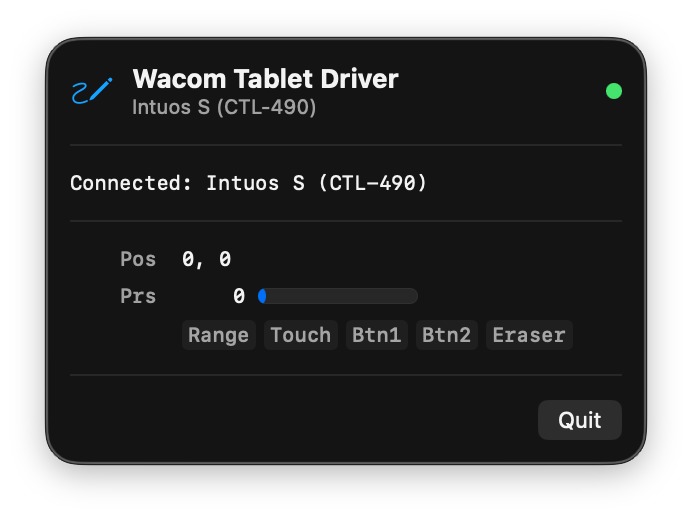

A native menu bar app that brings full pressure sensitivity to your Wacom Intuos tablet on modern macOS. No kernel extensions, no SIP changes.
2048 levels of pressure via native macOS tablet events. Works with Krita, Photoshop, Clip Studio, and other drawing apps.
Lives in the menu bar, out of the way. Starts automatically, runs silently in the background. No dock clutter.
No kernel extensions, no System Integrity Protection changes, no reboot required. Just download, open, and draw.
Automatically detects when you plug in or unplug your tablet. Supports all Intuos 2nd gen models.

Get the latest .dmg from GitHub Releases.
Open the DMG and drag Wacom Tablet to your Applications folder.
On first launch, grant Accessibility and Input Monitoring access when prompted in System Settings.
Plug in your Wacom tablet and open your favorite drawing app. Pressure works immediately.
| Model | Product | Status |
|---|---|---|
| CTL-490 | Intuos S (2nd gen) | Supported |
| CTH-490 | Intuos S Touch (2nd gen) | Supported |
| CTL-690 | Intuos M (2nd gen) | Supported |
| CTH-690 | Intuos M Touch (2nd gen) | Supported |
| Requirement | Details |
|---|---|
| macOS | 13.0 Ventura or later |
| Connection | USB |
| Permissions | Accessibility + Input Monitoring |
| Architecture | Apple Silicon (arm64) |